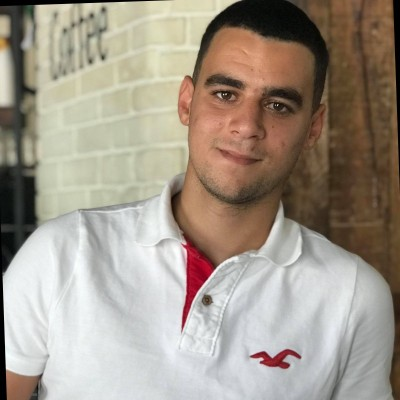
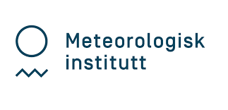
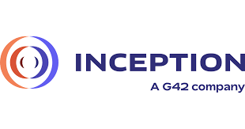
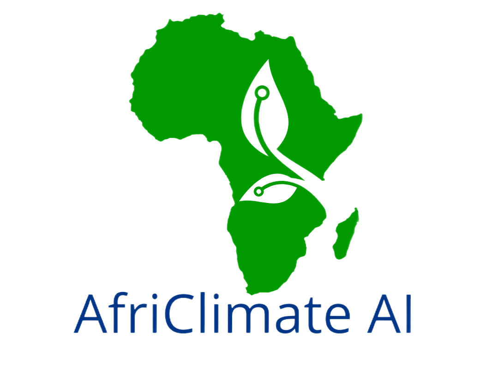
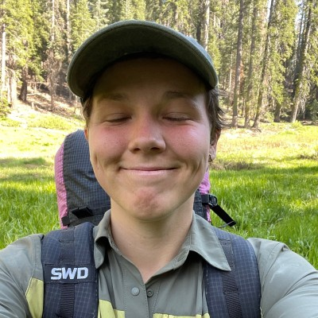
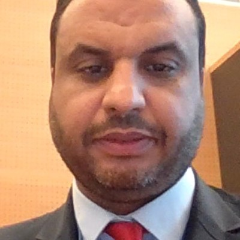

Organizers


Souhaib Ben Taieb
MBZUAI

Hosni Ghedira
MBZUAI
Pedram Hassanzadeh
UChicago

Amir Jina
UChicago
Katie Kowal
UChicago
Tufa Dinku
UChicago
Imara Salas
AIM4Scale

Project management
Akbobek Abilkaiyrkyzy
MBZUAI
Mauricio Ortiz - Riomalo
UChicago

Technical Development & Support
Mohamed Aziz Benzarti
MBZUAI

Adam Marchakitus
UChicago

Jad Zakharia
MBZUAI
Elnura Zhalieva
MBZUAI
Collaborators



Genevieve Flaspohler
Rhiza

Erkin Isaev
WMO

Rabia Merrouchi
WMO

Mustafa Adiguzel
WMO
Yuki Honda
WMO
NCM
NCM UAE
George Sserwadda
TAHMO
Corentin Carton de Wiart
ECMWF
William Becker
ECMWF
Vegard Bønes
MET Norway
G42 Inception
Elinor Kruse
Deepmind
Olivia Graham
Deepmind
Rendani Mbuvha
AfriClimate AI

Participants
In Progress
Participant information will be updated soon.